| Symbol |
Description |
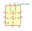
74LVC2T45DC | Description: Dual supply translating transceiver, 3-state, 2-bit, VSSOP-8
Keys: Level-Shifter CMOS-TTL-Translation
Datasheet: https://assets.nexperia.com/documents/data-sheet/74LVC_LVCH2T45.pdf |
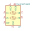
74LVCH2T45DC | Description: Dual supply translating transceiver with bus-hold for unused/floating inputs, 3-state, 2-bit, VSSOP-8
Keys: Level-Shifter CMOS-TTL-Translation
Datasheet: https://assets.nexperia.com/documents/data-sheet/74LVC_LVCH2T45.pdf |
FXMA108 | Description: Dual-Supply, 8-Bit Signal Translator with Configurable Voltage Supplies and Signals Levels, 3-State Outputs and Auto Direction Sensing, WQFN-20
Keys: Level shifter translator bidirectional
Datasheet: http://www.onsemi.com/pub/Collateral/FXMA108-D.pdf |
NCN4555MN | Description: SIM Card Power Supply and Level Shifter, QFN-16
Keys: SIM Card Level Shifter
Datasheet: https://www.onsemi.com/pub/Collateral/NCN4555-D.PDF |
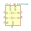
NLSV2T244D | Description: Dual-Bit Dual-Supply Non-Inverting Level Translator, Output Enable, SOIC-8
Keys: Level-Shifter CMOS-TTL-Translation
Datasheet: http://www.onsemi.com/pub/Collateral/NLSV2T244-D.PDF |
NLSV2T244DM | Description: Dual-Bit Dual-Supply Non-Inverting Level Translator, Output Enable, MSOP-8
Keys: Level-Shifter CMOS-TTL-Translation
Datasheet: http://www.onsemi.com/pub/Collateral/NLSV2T244-D.PDF |
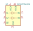
NLSV2T244MU | Description: Dual-Bit Dual-Supply Non-Inverting Level Translator, Output Enable, UDFN-8
Keys: Level-Shifter CMOS-TTL-Translation
Datasheet: http://www.onsemi.com/pub/Collateral/NLSV2T244-D.PDF |
SN74AUP1T34DCK | Description: 1-Bit Unidirectional Voltage-Level Translator, SC-70
Keys: Noninverting
Datasheet: http://www.ti.com/lit/ds/symlink/sn74aup1t34.pdf |
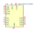
SN74AVC4T245PW | Description: 4-Bit Dual-Supply Bus Transceiver With Configurable Voltage Translation and 3-State Outputs, TSSOP-16
Keys: Noninverting Bidirectional
Datasheet: https://www.ti.com/lit/ds/symlink/sn74avc4t245.pdf |
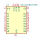
SN74AVC8T245PW | Description: 8-Bit Dual-Supply Bus Transceiver With Configurable Voltage Translation and 3-State Outputs, TSSOP-24
Keys: Noninverting Bidirectional
Datasheet: https://www.ti.com/lit/ds/symlink/sn74avc8t245.pdf |
SN74LV1T34DBV | Description: Single Power Supply, Single Buffer GATE, CMOS Logic, Level Shifter, SOT-23-5
Keys: single buffer level shift
Datasheet: https://www.ti.com/lit/ds/symlink/sn74lv1t34.pdf |
SN74LV1T34DCK | Description: Single Power Supply, Single Buffer GATE, CMOS Logic, Level Shifter, SOT-353
Keys: single buffer level shift
Datasheet: https://www.ti.com/lit/ds/symlink/sn74lv1t34.pdf |
SN74LVC1T45DBV | Description: Single-Bit Dual-Supply Bus Transceiver With Configurable Voltage Translation and 3-State Outputs, SOT-23-6
Keys: Level-Shifter CMOS-TTL-Translation
Datasheet: http://www.ti.com/lit/ds/symlink/sn74lvc1t45.pdf |
SN74LVC1T45DCK | Description: Single-Bit Dual-Supply Bus Transceiver With Configurable Voltage Translation and 3-State Outputs, SOT-363
Keys: Level-Shifter CMOS-TTL-Translation
Datasheet: http://www.ti.com/lit/ds/symlink/sn74lvc1t45.pdf |
SN74LVC1T45DRL | Description: Single-Bit Dual-Supply Bus Transceiver With Configurable Voltage Translation and 3-State Outputs, SOT-563
Keys: Level-Shifter CMOS-TTL-Translation
Datasheet: http://www.ti.com/lit/ds/symlink/sn74lvc1t45.pdf |
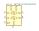
SN74LVC2T45DCUR | Description: Dual-Bit Dual-Supply Bus Transceiver With Configurable Voltage Translation and 3-State Outputs, VSSOP-8
Keys: Level-Shifter CMOS-TTL-Translation
Datasheet: http://www.ti.com/lit/ds/symlink/sn74lvc2t45.pdf |
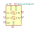
SN74LVC2T45YZP | Description: Dual-Bit Dual-Supply Bus Transceiver With Configurable Voltage Translation and 3-State Outputs, DSBGA-8
Keys: Level-Shifter CMOS-TTL-Translation
Datasheet: http://www.ti.com/lit/ds/symlink/sn74lvc2t45.pdf |
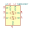
TXB0102DCT | Description: 2-Bit Bidirectional Voltage-Level Translator in TSSOP Package With Auto Direction Sensing and 15-kV ESD Protection
Keys: Level-Shifter CMOS-TTL-Translation
Datasheet: http://www.ti.com/lit/ds/symlink/txb0102.pdf |
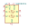
TXB0102DCU | Description: 2-Bit Bidirectional Voltage-Level Translator in VSSOP Package With Auto Direction Sensing and 15-kV ESD Protection
Keys: Level-Shifter CMOS-TTL-Translation
Datasheet: http://www.ti.com/lit/ds/symlink/txb0102.pdf |
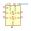
TXB0102YZP | Description: 2-Bit Bidirectional Voltage-Level Translator in DSBGA Package With Auto Direction Sensing and 15-kV ESD Protection
Keys: Level-Shifter CMOS-TTL-Translation
Datasheet: http://www.ti.com/lit/ds/symlink/txb0102.pdf |
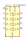
TXB0104D | Description: 4-Bit Bidirectional Voltage-Level Translator, Auto Direction Sensing and 15-kV ESD Protection, 1.2 - 3.6V APort, 1.65 - 5.5V BPort, SOIC-14
Keys: Level-Shifter CMOS-TTL-Translation
Datasheet: http://www.ti.com/lit/ds/symlink/txb0104.pdf |
TXB0104PW | Description: 4-Bit Bidirectional Voltage-Level Translator, Auto Direction Sensing and 15-kV ESD Protection, 1.2 - 3.6V APort, 1.65 - 5.5V BPort, TSSOP-14
Keys: Level-Shifter CMOS-TTL-Translation
Datasheet: http://www.ti.com/lit/ds/symlink/txb0104.pdf |
TXB0104RGY | Description: 4-Bit Bidirectional Voltage-Level Translator, Auto Direction Sensing and 15-kV ESD Protection, 1.2 - 3.6V APort, 1.65 - 5.5V BPort, Texas_PVGFN-14
Keys: Level-Shifter CMOS-TTL-Translation
Datasheet: http://www.ti.com/lit/ds/symlink/txb0104.pdf |
TXB0104RUT | Description: 4-Bit Bidirectional Voltage-Level Translator, Auto Direction Sensing and 15-kV ESD Protection, 1.2 - 3.6V APort, 1.65 - 5.5V BPort, Texas_PUQFN-12
Keys: Level-Shifter CMOS-TTL-Translation
Datasheet: http://www.ti.com/lit/ds/symlink/txb0104.pdf |
TXB0104YZT | Description: 4-Bit Bidirectional Voltage-Level Translator, Auto Direction Sensing and 15-kV ESD Protection, 1.2 - 3.6V APort, 1.65 - 5.5V BPort, DSBGA-12
Keys: Level-Shifter CMOS-TTL-Translation
Datasheet: http://www.ti.com/lit/ds/symlink/txb0104.pdf |
TXB0104ZXU | Description: 4-Bit Bidirectional Voltage-Level Translator, Auto Direction Sensing and 15-kV ESD Protection, 1.2 - 3.6V APort, 1.65 - 5.5V BPort, Texas_Junior-12
Keys: Level-Shifter CMOS-TTL-Translation
Datasheet: http://www.ti.com/lit/ds/symlink/txb0104.pdf |
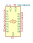
TXB0108DQSR | Description: 8-bit bidirectional voltage level translator with auto-direction sensing USON package
Keys: bidirectional voltage level translator
Datasheet: http://www.ti.com/lit/ds/symlink/txb0108.pdf |
TXB0304RUT | Description: 4-Bit Bidirectional Voltage-Level Translator, Auto Direction Sensing, 0.9 - 3.6V APort, 0.9 - 3.6V BPort, Active High Output Enable, Texas_PUQFN-12
Keys: Level-Shifter CMOS-TTL-Translation
Datasheet: http://www.ti.com/lit/ds/symlink/txb0304.pdf |
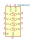
TXBN0304RUT | Description: 4-Bit Bidirectional Voltage-Level Translator, Auto Direction Sensing, 0.9 - 3.6V APort, 0.9 - 3.6V BPort, Active Low Output Enable, Texas_PUQFN-12
Keys: Level-Shifter CMOS-TTL-Translation
Datasheet: http://www.ti.com/lit/ds/symlink/txb0304.pdf |
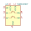
TXS0102DCT | Description: 2-Bit Bidirectional Voltage-Level Shifter for Open-Drain and Push-Pull Application, SSOP-8
Keys: Level-Shifter CMOS-TTL-Translation
Datasheet: http://www.ti.com/lit/gpn/txs0102 |
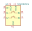
TXS0102DCU | Description: 2-Bit Bidirectional Voltage-Level Shifter for Open-Drain and Push-Pull Application, VSSOP-8
Keys: Level-Shifter CMOS-TTL-Translation
Datasheet: http://www.ti.com/lit/gpn/txs0102 |
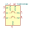
TXS0102DQE | Description: 2-Bit Bidirectional Voltage-Level Shifter for Open-Drain and Push-Pull Application, X2SON-8
Keys: Level-Shifter CMOS-TTL-Translation
Datasheet: http://www.ti.com/lit/gpn/txs0102 |
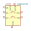
TXS0102YZP | Description: 2-Bit Bidirectional Voltage-Level Shifter for Open-Drain and Push-Pull Application, DSBGA-8
Keys: Level-Shifter CMOS-TTL-Translation
Datasheet: http://www.ti.com/lit/gpn/txs0102 |
TXS0108EPW | Description: Bidirectional level-shifting voltage translator, TSSOP-20
Keys: 8-bit
Datasheet: www.ti.com/lit/ds/symlink/txs0108e.pdf |